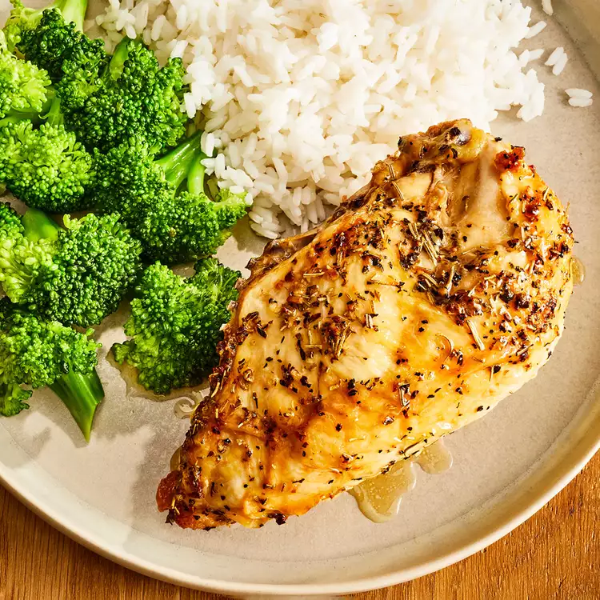

<body>
    <link rel="stylesheet" href="style.css">
</body>
<h1>Baked Split Chicken Breast</h1>
    
<h2>Description</h2>
    <p>Enjoy an herb-infused chicken dish that doesn't shy away from big flavor. You'll find the full recipe below with
    step-by-step instructions, but here's what you can expect when you make this top-rated recipe;</p>
    <p>Use large, bone-in chicken breast halves for hearty results. Rub the breasts with olive oil and garlic, then sprinkle
    them with salt, pepper, dried rosemary, and basil. Place the chicken in a baking dish and refrigerate to allow flavors
    to marry.</p>
<h2>Ingredients</h2>
    <ul>
        <li>2 large bone-in chicken breast halves with skin</li>
        <li>¼ cup extra-virgin olive oil</li>
        <li>½ teaspoon garlic, minced</li>
        <li>½ teaspoon coarse sea salt</li>
        <li>½ teaspoon cracked black pepper</li>
        <li>¼ teaspoon dried rosemary</li>
        <li>¼ teaspoon dried basil</li>
    </ul>
<h2>Steps</h2>
    <ol>
        <li>Rub chicken breasts with olive oil and garlic; sprinkle with salt, black pepper, rosemary, and basil. Arrange chicken in
        a large baking dish and refrigerate for at least 45 minutes.</li>
        <li>Meanwhile, preheat oven to 375 degrees F (190 degrees C).</li>
        <li>Bake in the preheated oven until chicken meat is no longer pink at the bone and the juices run clear, 45 to 60 minutes.
        An instant-read thermometer inserted in the thickest part of the breast meat should read 165 degrees F (75 degrees C).</li>
    </ol>